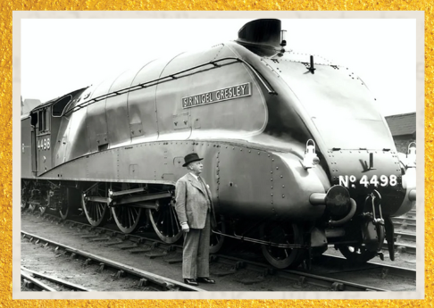

Locomotiva a Vapor Mallard
A locomotiva Mallard, número 4498, é um ícone da engenharia ferroviária a vapor. Projetada por Sir Nigel
Gresley e construída em 1938, foi movida por um sistema de caldeiras que transformava água em vapor sob alta
pressão. Esse vapor acionava pistões conectados às rodas, impulsionando a locomotiva com força e eficiência.
O Mallard é mundialmente conhecido por ter atingido a velocidade recorde de 203 km/h, a mais alta já
registrada por uma locomotiva a vapor. Seu design aerodinâmico e tecnologia avançada marcaram o auge da era
do vapor nas ferrovias.